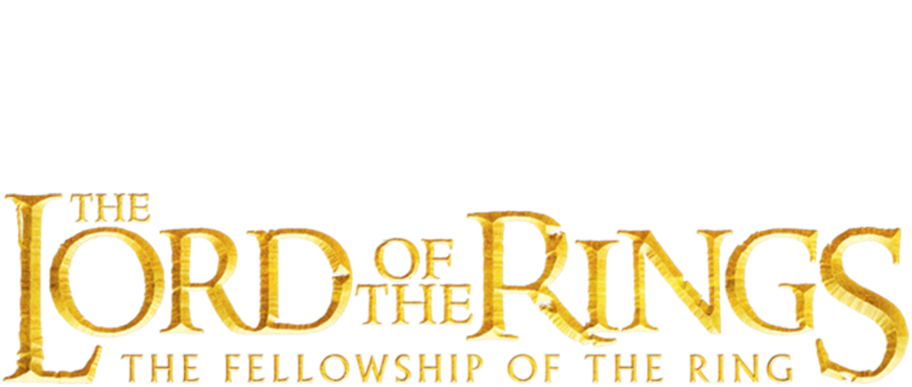

About the Lord of the Rings

Main Page
A collection of web pages about various characters from the Lord of the Rings
Characters:
Hello! You've reached the main page of the website.
About the Lord of the Rings
Author
The book series "The Lord of the Rings" was written by John Ronald Reul Tolkien, from 1937 to 1949.
It grew from Tolkien's children's book, the Hobbit. Initially just a sequel, it came to be one of the most defining works in history.
Synopsis
The Lord of the Rings is a three-book series that tells the tale of the One Ring, an object of great and terrible power.
Fun Facts
Aragorn Broke his Toe
Viggo Mortenson, the actor who played Aragorn, broke his toe when he kicked a helmet in the movie "The Two Towers."
The Best Warriors in the Books were the Dwarves
In the books, it says:
"The Dwarves were ... the most redoubtable warriors of all the Speaking Peoples"
and
"[Galadriel] looked upon the Dwarves also with the eye of a commander, seeing in them the finest warriors to pit against the Orcs."